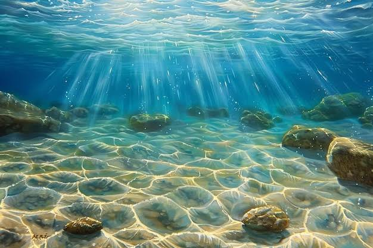
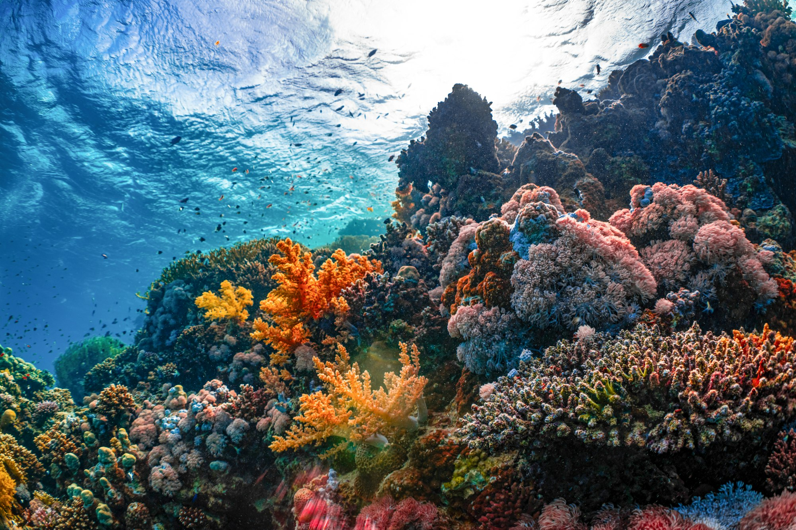
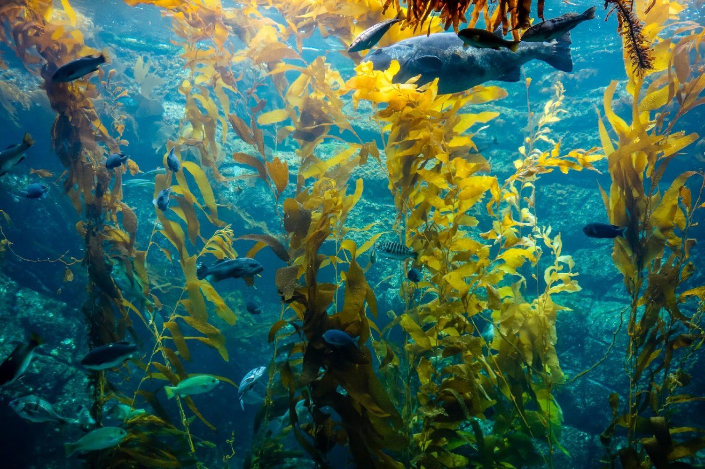
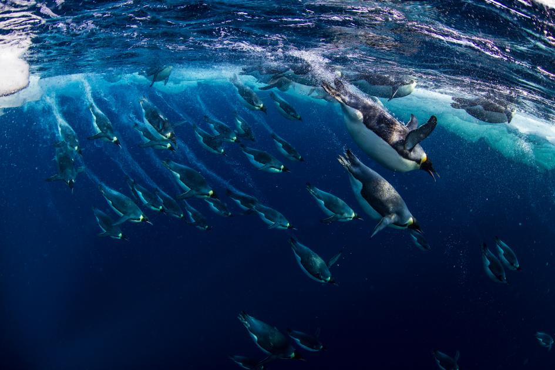
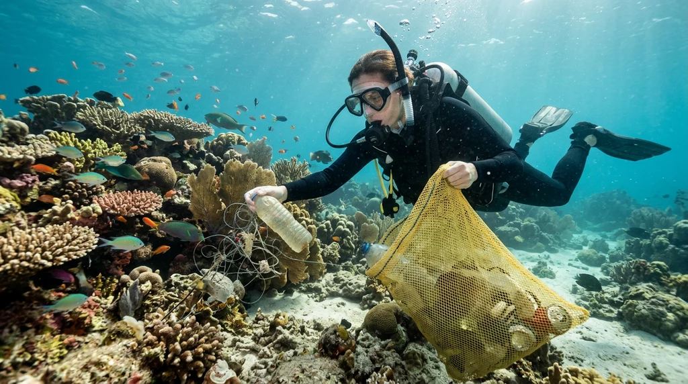

Beneath the shimmering, endless surface of our oceans lies an extraordinary underwater universe filled with vibrant colors, silent landscapes, and fascinating life forms that seem straight out of a dream. Covering more than seventy percent of our entire planet, the global ocean holds ninety-seven percent of Earth's water and remains one of the least explored frontiers in human history—in fact, scientists have mapped more of the surface of Mars and the Moon than the deepest parts of our own sea floor. Far below the crashing waves and sunlit shallows, massive underwater mountain ranges known as mid-ocean ridges stretch for tens of thousands of miles, towering underwater volcanoes rise from the abyss, and deep, mysterious trenches plunge miles into total darkness. Every ripple on the surface hides a quiet, magical world where golden beams of sunlight pierce through crystal-clear turquoise water, creating dancing patterns across rippled sandy ocean floors, hidden underwater caves, and ancient shipwrecks slowly being reclaimed by nature.

Coral reefs are the bustling, vibrant cities of the sea, taking up less than one percent of the ocean floor while providing essential shelter, food, and safe nurseries for more than twenty-five percent of all known marine species. Built over thousands of years by tiny living coral polyps, these intricate underwater gardens burst with every color of the rainbow. Within their twisting branches, massive schools of neon-colored tropical fish—like bright orange clownfish, electric blue tangs, and striped angelfish—dart playfully between swaying sea anemones, while graceful sea turtles glide effortlessly through warm ocean currents. Giant manta rays soar through the water like underwater birds with wingspans wider than a car, clever octopuses change their colors, patterns, and skin textures in the blink of an eye to vanish into rocky crevices, and energetic pods of dolphins leap joyfully through the waves. Even in the pitch-black midnight zone miles below the surface, where sunlight never reaches and freezing temperatures prevail, glowing bioluminescent jellyfish, deep-sea squid, and lanternfish create their own mesmerizing natural light shows in the crushing darkness.

Beyond the bright, bustling coastal reefs stretches the vast open ocean, a boundless blue highway where the largest and fastest animals on Earth travel across entire hemispheres. Majestic humpback whales and colossal blue whales—the largest creatures to have ever lived on our planet—migrate thousands of miles each year between feeding and breeding grounds, communicating across vast distances with haunting, melodic songs that echo through the water for hours. Sleek sharks patrol the deep blue as ancient, essential guardians of ocean health, keeping marine populations balanced and strong. Closer to rocky coastlines, towering underwater kelp forests grow several feet a day, swaying gently with the ocean tides like giant underwater trees. These lush green canopies offer safe hiding places and rich hunting grounds for playful sea otters wrapped in kelp blankets, tiny camouflaged seahorses clinging to swaying stems, spiny sea urchins, and brightly colored starfish resting on the rocks below.

Even in the freezing polar regions at the very top and bottom of the globe, life beneath the ice thrives in remarkable ways. Beneath thick sheets of floating sea ice in the Arctic and Antarctic, seals, penguins, and beluga whales dive gracefully through icy blue caverns, while unique cold-water fish produce natural antifreeze proteins in their blood to survive the sub-zero temperatures. Farther down on the abyssal plains, strange hydrothermal vents—often called "black smokers"—gush superheated, mineral-rich water from deep inside the Earth's crust, supporting entire ecosystems of giant tube worms, ghostly white crabs, and deep-sea clams that thrive without ever needing a single ray of sunlight.

The underwater world does far more than amaze us with its breathtaking beauty and endless mystery—it acts as the true life-support system for all of Planet Earth. Tiny, microscopic ocean plants called phytoplankton drift near the sunlit surface and produce more than half of the oxygen we breathe with every single breath, while the vast oceans absorb massive amounts of carbon dioxide and excess heat to keep our global climate stable, balanced, and livable. Keeping our seas clean, reducing single-use plastic waste, preventing chemical pollution, and protecting fragile marine habitats ensures that coral reefs continue to bloom, whales keep singing across the deep, and this magnificent underwater paradise thrives for generations to come.
